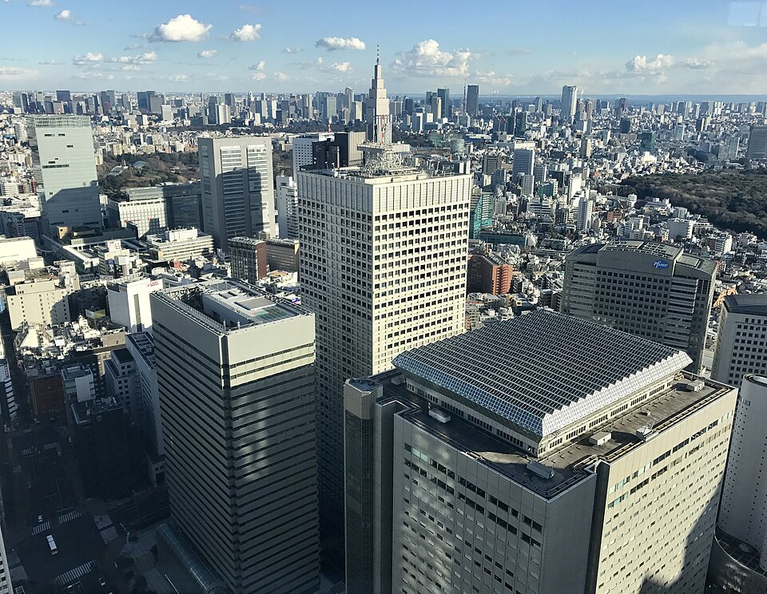
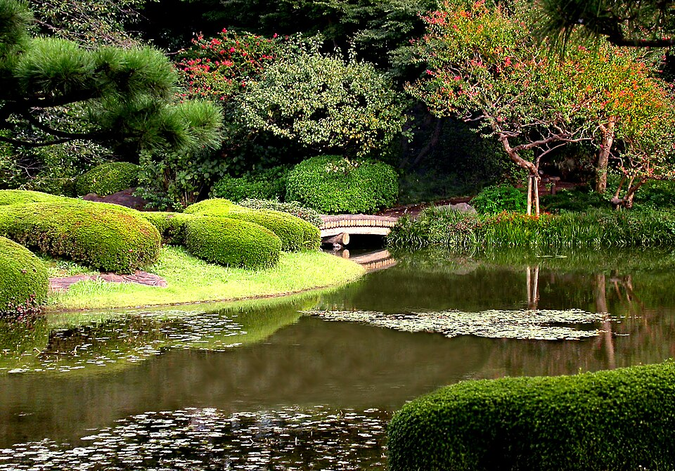
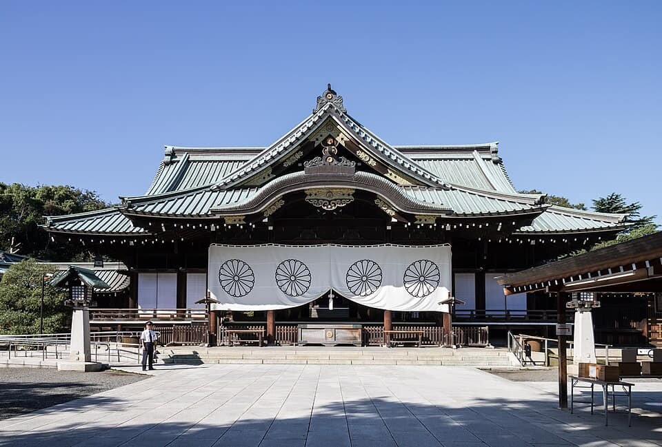
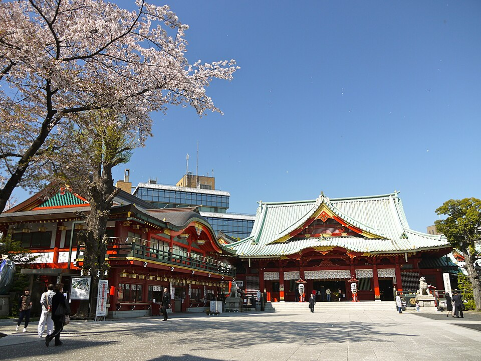
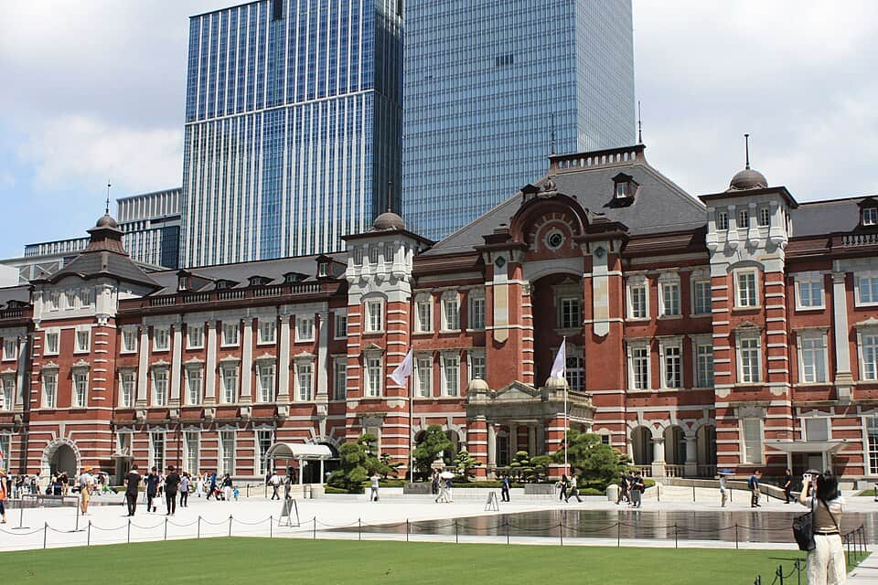
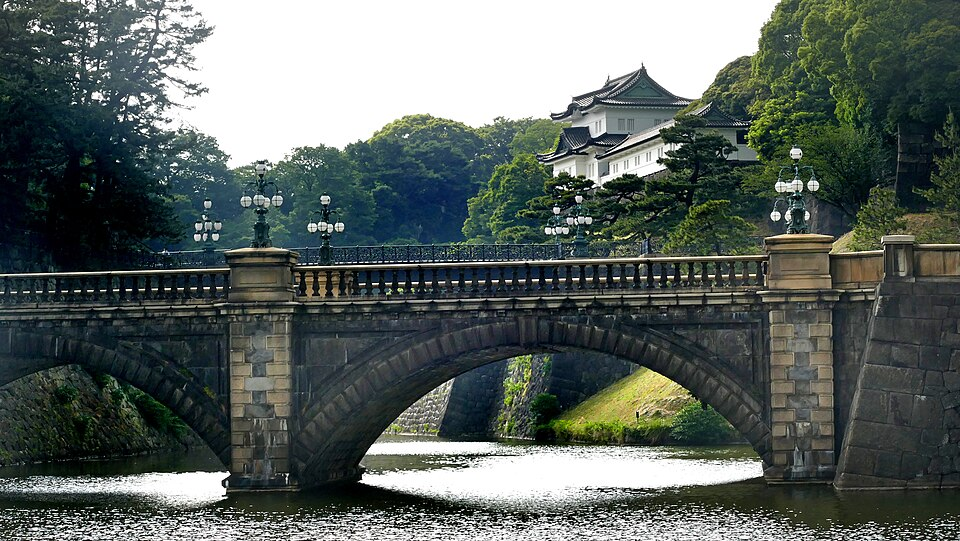
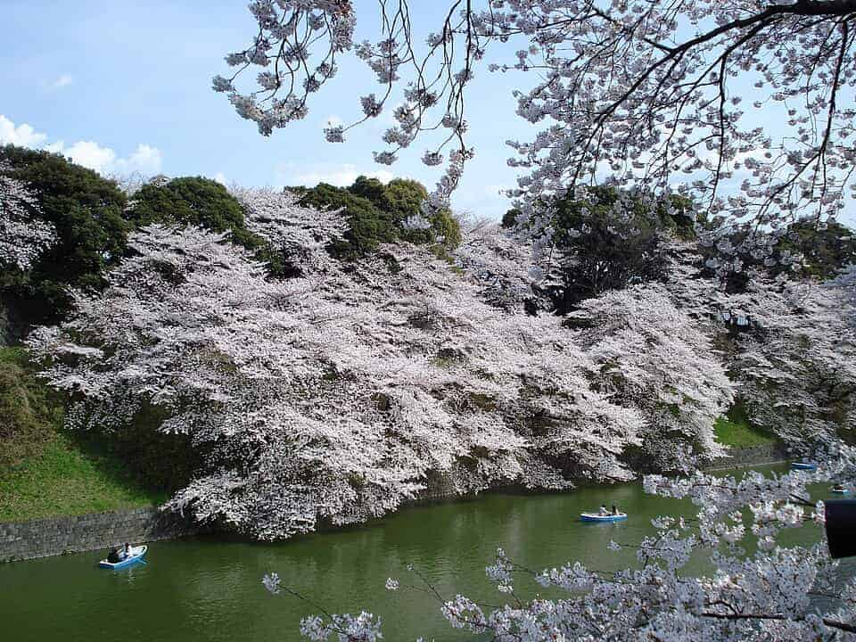

Japan
Tokyo 東京
ward by ward · Jōnan · Jōsai · Jōhoku · Jōtō · Tama · Kantō day trips
488 places · 13 areas · every one sourced, pinned and status-checked · last checked · 1 closed, kept for the record. Ordered by tier, then by number of named sources. How we choose
Edomae sushi · soba · Edo-Tokyo Museum

Start with

Chiyoda-ku 43 places · area 1 of 13
Imperial Palace · Marunouchi · Akihabara · Kanda · Jimbōchō

Photo: john w · CC BY 2.0 · Wikimedia Commons (resized) 1 Must see within Chiyoda-ku
Imperial Palace East Gardens (皇居東御苑)
The free public garden on the old honmaru of Edo Castle — the castle-keep base, guardhouses and a seasonal garden inside the palace walls.
Look for Edo Castle ruins, free admission
1-1 Chiyoda, Chiyoda-ku, Tokyo 100-8111
Recommended by , ,

Photo: Kakidai · CC BY-SA 4.0 · Wikimedia Commons (resized) 2 Must see within Chiyoda-ku
Yasukuni Shrine (靖國神社)
The 1869 Shintō shrine to Japan's war dead — great torii, cherry-tree avenue and the Yūshūkan war museum; politically contested, historically essential.
3-1-1 Kudankita, Chiyoda-ku, Tokyo 102-8246
Recommended by , ,

Photo: Yoshikazu TAKADA from Tokyo, Japan · CC BY 2.0 · Wikimedia Commons (resized) 3 Must see within Chiyoda-ku
Kanda Myōjin (神田明神)
1,300-year-old shrine of Edo's merchants, home of the Kanda Matsuri — and, a block from Akihabara, an anime pilgrimage stop (Love Live!) with IT-blessing omamori.
2-16-2 Sotokanda, Chiyoda-ku, Tokyo 101-0021
Recommended by , ,

Photo: Alexandr3126 · CC BY-SA 4.0 · Wikimedia Commons (resized) 4 Must see within Chiyoda-ku
Tokyo Station Marunouchi Building (東京駅丸の内駅舎)
Tatsuno Kingo's 1914 red-brick station front, restored with its twin domes in 2012 — a nationally Important Cultural Property.
Tokyo Station, Marunouchi 1-chōme, Chiyoda-ku, Tokyo
Recommended by , ,
-
5 Must see within Chiyoda-ku
Akihabara Electric Town (秋葉原電気街)
Tokyo's electronics-and-otaku quarter — multi-storey arcades, figure shops, retro-game dens and maid cafés around Chūō-dōri.
Sotokanda 1-chome, Chiyoda-ku, Tokyo
Recommended by , ,

Photo: Bernard Spragg. NZ from Christchurch, New Zealand · Public domain · Wikimedia Commons (resized) 6 Must see within Chiyoda-ku
Kōkyo Gaien & Nijūbashi (皇居外苑・二重橋)
The Imperial Palace's outer garden — a gravel plaza of 2,000 sculpted black pines leading to the classic view of the Nijūbashi bridges and Fushimi turret over the moat.
Look for Nijūbashi view, black pines
Kōkyo Gaien, Chiyoda-ku, Tokyo (in front of the Imperial Palace)
Recommended by , ,
-
7 Must see within Chiyoda-ku · Izakaya
Isegen (いせ源)
Tokyo's only anko-nabe specialist, cooking monkfish hotpot since 1830 in a 1930 wooden house — no reservations, no cards, open in the cold season.
1-11-1 Kanda-Sudachō, Chiyoda-ku, Tokyo 101-0041
Recommended by , ,
-
8 Must see within Chiyoda-ku · Sake
Virtù, Four Seasons Hotel Tokyo at Otemachi
Art-deco cocktail bar at the Four Seasons Otemachi; the Virtù Martini uses Japanese gin and vodka with hinoki bitters. Asia's 50 Best Bars 2026 No 26 and World's 50 Best Bars 2025.
Four Seasons Hotel Tokyo at Otemachi, 1-2-1 Otemachi, Chiyoda City, Tokyo 100-0004 (hotel address per Google Hotels; bar floor not confirmed)
Recommended by , ,

Photo: "Tyoron2" · Public domain · Wikimedia Commons (resized) 9 Must see within Chiyoda-ku
Chidorigafuchi (千鳥ヶ淵緑道)
The 700 m promenade above Edo Castle's moat under some 230 cherry trees — Tokyo's most beloved hanami walk, with rowboats on the water below and night illuminations in season.
Look for moat-side hanami, rowboats
Chidorigafuchi Ryokudō, Chiyoda-ku, Tokyo
Recommended by ,
-
10 Must see within Chiyoda-ku
Mandarake Complex Akihabara (まんだらけコンプレックス)
Eight-storey flagship of the second-hand otaku chain, each floor sorted by product type — vintage 'Japanese Pop Antique' figures, magical-girl toys and cosplay, manga, dōjinshi and more (Time Out, Tokyo Cheapo).
Look for ★ Anime & pop culture — Anime & manga collectibles — the biggest single Mandarake, Akihabara's deep-cut used-figure and dōjinshi tower · Otaku megastore
3-11-12 Sotokanda, Chiyoda City, Tokyo
Recommended by ,
-
11 Must see within Chiyoda-ku · Soba
Kanda Yabu Soba (かんだやぶそば)
The patriarch of Tokyo's Yabu soba lineage (1880) — rebuilt as a one-storey house after the 2013 fire; staff still sing orders to the kitchen.
2-10 Kanda-Awajichō, Chiyoda-ku, Tokyo 101-0063
Recommended by ,
-
12 Must see within Chiyoda-ku · Soba
Kanda Matsuya (神田まつや)
Soba house since 1884 in a Taishō-era wooden building a minute from Awajichō Station — more down-to-earth and cheaper than Yabu, just as beloved.
1-13 Kanda-Sudachō, Chiyoda-ku, Tokyo 101-0041
Recommended by ,
-
13 Must see within Chiyoda-ku · Kaiseki
RyuGin, Tokyo Midtown Hibiya (日本料理 龍吟)
Seiji Yamamoto's celebrated Japanese restaurant, moved from Roppongi to the 7th floor of Tokyo Midtown Hibiya — three MICHELIN stars in the 2026 guide.
7F, Tokyo Midtown Hibiya, 1-1-2 Yūrakuchō, Chiyoda-ku, Tokyo 100-0006
Recommended by ,
-
14 Must see within Chiyoda-ku · Wagyu
Botan, Kanda-Sudachō (ぼたん)
Founded in the last years of the 19th century and rebuilt after the 1923 earthquake in the two-storey timber house it still occupies: one dish only, chicken sukiyaki bubbling in a cast-iron pot over glowing charcoal.
1-15 Kanda-Sudachō, Chiyoda-ku, Tokyo
Recommended by ,
-
15 Must see within Chiyoda-ku
Sézanne
Daniel Calvert's dining room above Tokyo Station — awarded three Michelin stars in the 18th Tokyo guide, French technique with Japanese ingredients.
7F Four Seasons Hotel Tokyo at Marunouchi, 1-11-1 Marunouchi, Chiyoda-ku, Tokyo 100-6277
Recommended by
-
16 Must see within Chiyoda-ku · Kaiseki
Kioicho Fukudaya (紀尾井町 福田家)
A traditional ryōtei in Kioichō serving seasonal Japanese cuisine — two MICHELIN stars in the 2026 Tokyo guide.
1-13 Kioichō, Chiyoda-ku, Tokyo 102-0094
Recommended by
-
17 Must see within Chiyoda-ku
MAZ, Tokyo Garden Terrace Kioichō
Tasting-menu restaurant on the third floor of Tokyo Garden Terrace Kioichō — two MICHELIN stars in the 2026 guide.
3F, Tokyo Garden Terrace Kioichō, 1-3 Kioichō, Chiyoda-ku, Tokyo 102-0094
Recommended by
-
18 Worth the detour within Chiyoda-ku
Nippon Budōkan (日本武道館)
The octagonal 1964 Olympic judo hall that became Japan's rock temple (the Beatles, 1966) — still the martial-arts and concert landmark of Kitanomaru Park.
2-3 Kitanomaru-koen, Chiyoda-ku, Tokyo 102-8321
Recommended by , ,
-
19 Worth the detour within Chiyoda-ku
Hibiya Park (日比谷公園)
Japan's first Western-style park (1903), across the moat from the Imperial Palace — rose beds, an open-air concert hall and the century-old Matsumoto-rō restaurant.
Look for Western-style park, open-air concerts
Hibiya-kōen, Chiyoda-ku, Tokyo
Recommended by , ,
-
20 Worth the detour within Chiyoda-ku
National Diet Building (国会議事堂)
The stepped-pyramid granite parliament (1936) — free guided tours of the House of Councillors chamber run on weekdays.
Look for free weekday tours
1-7-1 Nagatachō, Chiyoda-ku, Tokyo 100-0014
Recommended by , ,
-
21 Worth the detour within Chiyoda-ku
Mitsubishi Ichigōkan Museum (三菱一号館美術館)
A faithful 2009 rebuild of Josiah Conder's 1894 red-brick Mitsubishi office, now a museum of 19th-century European art beside the Brick Square garden.
Look for Josiah Conder red brick
2-6-2 Marunouchi, Chiyoda-ku, Tokyo 100-0005
Recommended by , ,
-
22 Worth the detour within Chiyoda-ku
Tokyo Character Street, Tokyo Station (東京キャラクターストリート)
An underground row of 30-plus official character shops opened in 2008 on the Yaesu side of Tokyo Station — Pokémon, Studio Ghibli, Kirby, Chiikawa, Crayon Shin-chan, Rilakkuma and Hello Kitty, some with station-exclusive goods.
Look for ★ Anime & pop culture — Character merchandise — one corridor of official stores for Pokémon, Ghibli, Kirby, Shin-chan, Chiikawa and more · Character-goods arcade
First Avenue Tokyo Station B1 (Yaesu side), 1-9-1 Marunouchi, Chiyoda-ku, Tokyo
Recommended by , ,
-
23 Worth the detour within Chiyoda-ku · Kissaten
Glitch Coffee & Roasters
Light-roast specialty roaster in Kanda-Nishikichō pouring about 15 single origins by hand drip; owner Kiyokazu Suzuki is a former Japan AeroPress champion.
Kayamura Bldg 1F (香村ビル１階), 3-16 Kanda Nishikicho, Chiyoda City, Tokyo 101-0054
Recommended by , ,
-
24 Worth the detour within Chiyoda-ku · Ramen
Rokurinsha, Tokyo Ramen Street (六厘舎 東京ラーメンストリート)
The star of Tokyo Station's eight-shop Tokyo Ramen Street and by far its longest queue — thick tsukemen noodles dipped into a dense pork-and-seafood broth simmered for 13 hours.
Tokyo Ramen Street, Tokyo Station First Avenue B1 (Yaesu side), Marunouchi, Chiyoda-ku, Tokyo
Recommended by , ,

Chūō-ku 49 places · area 2 of 13
Ginza · Nihonbashi · Tsukiji · Tsukishima · Ningyōchō

Minato-ku 54 places · area 3 of 13
Roppongi · Azabu-Jūban · Akasaka · Shimbashi · Shiba · Odaiba

Shinjuku-ku 44 places · area 4 of 13
Kabukichō · Golden Gai · Omoide Yokochō · Shinjuku Gyoen · Kagurazaka · Shin-Ōkubo

Shibuya-ku 46 places · area 5 of 13
Shibuya · Harajuku · Omotesandō · Ebisu · Yoyogi · Daikanyama

Taitō-ku 44 places · area 6 of 13
Asakusa · Ueno · Yanaka · Kappabashi · Okachimachi

Sumida-ku & Kōtō-ku 31 places · area 7 of 13
Skytree · Ryōgoku · Kiyosumi-Shirakawa · Monzen-Nakachō · Toyosu

Jōnan 29 places · area 8 of 13
Shinagawa · Meguro · Ōta · Nakameguro · Togoshi-Ginza · Kamata · Haneda

Jōsai 30 places · area 9 of 13
Setagaya · Nakano · Suginami · Shimokitazawa · Sangenjaya · Gōtokuji · Nakano Broadway · Kōenji · Ogikubo

Jōhoku 37 places · area 10 of 13
Toshima · Bunkyō · Kita · Arakawa · Itabashi · Nerima · Ikebukuro · Sugamo · Nezu · Akabane · Nippori

Jōtō 16 places · area 11 of 13
Katsushika · Edogawa · Adachi · Shibamata · Kameari · Kita-Senju · Kasai

Tama area 26 places · area 12 of 13
Kichijōji · Mitaka & Ghibli · Takao-san · Okutama · Hachiōji · Chōfu

Kantō day trips 39 places · area 13 of 13
Yokohama · Kamakura · Hakone · Nikkō · Kawagoe · Fuji Five Lakes
How we choose
Every place is recommended by named sources (review-aggregator star ratings never count as the recommender), pinned to its door from a published coordinate, and status-checked. Closed places stay, flagged, so you know they’re gone.
- Must see
- The places to plan a visit around — graded within each area, not across the city.
- Worth the detour
- Strong picks, worth going out of your way for.
- Deep cut
- For the curious: smaller, odder, more local.
Within each area, places are ordered by tier, then by number of named sources — never by popularity. No ratings, prices or opening hours are shown, because the guide doesn’t hold verified ones.
263 sights and 225 places to eat across Tokyo, organised the way Tokyoites think about the city — the big special wards (Chiyoda, Chūō, Minato, Shinjuku, Shibuya, Taitō, Sumida-Kōtō) as their own areas, the rest by the old compass terms Jōnan, Jōsai, Jōhoku and Jōtō, then the Tama hills and the Kantō day-trip ring (Kamakura, Hakone, Nikkō, Kawagoe, Fuji Five Lakes, Yokohama). The food list starts from what is Tokyo's own — Kanda soba, Edomae sushi and unagi, monjayaki, dozeu loach, yōshoku omurice, tonkatsu and shōyu ramen — with the Michelin bench and century-old shinise beside each other. Every place is traceable to its source.
Take Tokyo with you
Every place, its sources, the Guidebook and the photos at a small size. Map tiles are not saved: offline, the map shows our own pin schematic and every place stays listed.